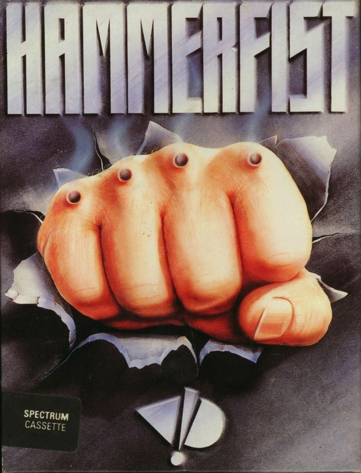
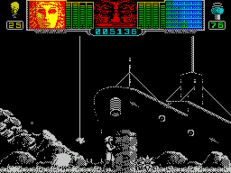

Hammerfist


{kind=link}

| Publisher: | Activision |
| Price: | £9.99 |
| Year: | 1990 |
| Source: | CRASH, Issue 75 |

It’s into an apocalyptic future with Activision’s latest beat-’em-up. A huge corporate body called Centro-Holografix controls the two largest cities on the planet with a rod of iron. The company is evil, run by a creature known only as The Master. It controls normal humans (known as solids) with holographic hit squads. Two such warriors are Hammerfist (so called because of his hammer-shaped cybernetic hands) and Metalisis. But whilst in their stasis holding-pens something goes terribly wrong: due to a computer error they’re fused into one form. Upset at this they/it want to find a way to split their personalities and revert to normal existence, only possible if the way back to Centro-Holografix is found.
It is up to you to guide the amalgamated duo through four game loads filled with myriad creatures and danger to reach The Master and wreak revenge. By switching from one half of the fused duo to the other you have their different characteristics at your disposal: Hammerfist’s strength (though slow and clumsy) and three weapons — laser gun, hammer fist and piston power fist, and Metalisis’ unarmed combat and athletic agility.

You start the game in an underwater complex. A wide range of enemy — human, not so human and robotic try to knock down the energy level of the hero currently under control. But they’re only half your trouble: a security system must be breached before you can exit each room.
As a bonus the destruction of the enemy bestows icons that have differing effects. Some top up your energy levels, although headbutting a handy power point (when found) also has the same effect. Ammo is limited, so Hammerfist must collect the laser and hammer fist top ups. Don’t miss too many icons because The Masters’ energy level increases: let this hit the top and skill icons appear which drain energy when touched. Another problem faced is when vital items are only to be found on ledges Hammerfist can’t reach. That’s where Metalisis’ gymnastic skills come in handy.
The journey is a long and treacherous one, through water and desert, to reach The Masters and the final showdown: be prepared because they are!
Although a lot of blasting is needed to get anywhere, an equal amount of brain power must be employed. Switching between the two characters is essential to move anywhere, so you will need to perform some very quick changes indeed. Hammerfist’s graphical details are quite stunning, especially the backdrops that change from scene to scene. The character sprites are well drawn and smoothly animated, although the enemy creatures resemble rejects from a cutesy Japanese game, but these are post nuclear conflict times I suppose. Vivid Image and Activision have produced a ‘must buy’ game!
MARK — 95%
Hammerfist is great! The subtle blend of arcade and strategy elements makes this a taxing and highly playable game. The enemy troops are tough so and so’s, and their sheer numbers will cost you life after life initially. But after a bit of practice a flick of the wrist changes you from shape to shape without a thought. It was difficult to drag myself away from this long enough to write this comment, but you deserve to know what a classy piece of programming this is. The sprites are monochromatic, but the attention to detail on all character and background sprites are praiseworthy. Sound, a great tune and atmospheric sound fx, is fab too. Now all I have to do is kick Mark off the computer and have another go.
NICK — 94%
RATING
Action and strategy combine in Hammerfist to produce an amazingly playable game.
| Presentation: | 87% |
| Graphics: | 88% |
| Sound: | 79% |
| Playability: | 90% |
| Addictivity: | 89% |
| Overall: | 95% |